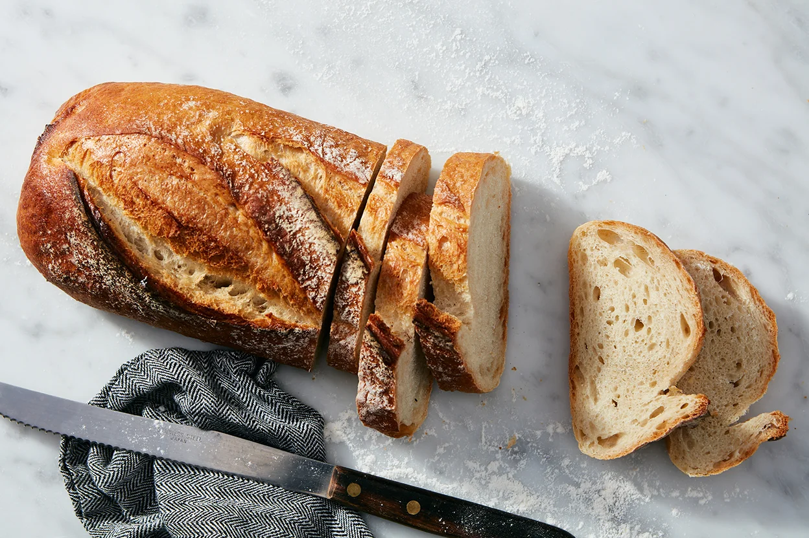
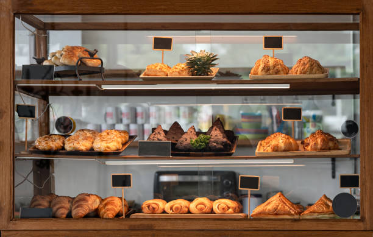

Freshly Baked
Artisan breads, pastries and cakes that are made exclusively at the heart of Pretoria.
View ProductsPopular Favourites
A taste of our fresh pastries.

Artisan Breads
Stone-baked sourdough and rye loaves crafted fresh every morning using Mzansi methods.
Shop here, Now!

How we Became
Sweet Pastry Bakery was founded in 2020 with 1 goal — to bring honest, wholesome artisan baking back to the streets of Pretoria. Every loaf, pastry and cake is made by hand using locally sourced ingredients.
Trust us when we say you will not taste anything as savoury as our freshly baked goods, you dont want to miss an experience of a lifetime.
More About Us
Have a Special Order in Mind?
We love creating custom cakes and catering packages for events of all sizes. Get in touch and we will make it happen.
Make an Enquiry